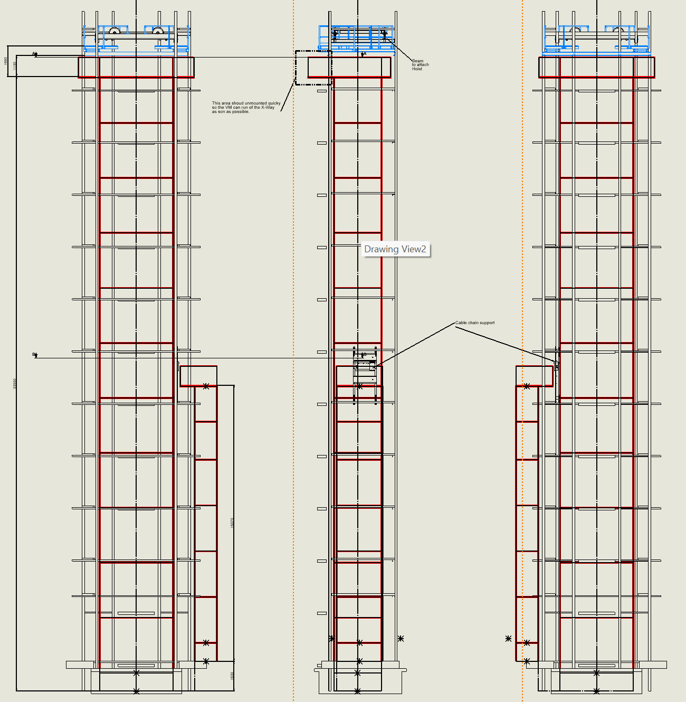
| Version | Date | Auteur | Modifications |
|---|---|---|---|
| A | 10/11/2026 | MIHCI S. | Création du document (brouillon V1) : données d'entrée et nomenclature de lancement d'une cage Levmatic, règles déduites de l'historique des affaires P&G, nommage BEEM. |
| B | 11/11/2026 | MIHCI S. | Refonte complète (V2) : ajout des illustrations (plans d'implantation, plan de cage, classeur de lancement, serveur et PDM), chapitre « Présentation du système », règles de pas d'étage et d'alvéole lues sur plan, interface nacelle / rayonnage / convoyeur, règles de mise en plan BEMI, arborescence des dossiers. |
| Repère | Signification |
|---|---|
| Confirmé | Information lue telle quelle dans une source écrite (plan, classeur, tableau, nom de fichier). |
| Déduit | Tendance ou interprétation tirée des sources. À valider par le tuteur avant application. |
| À compléter | Information absente des sources disponibles. |
| Source | Apport |
|---|---|
| Classeur de lancement EHP01718LEVM001 « Création cage Levmatic NEXT EXPANSION » (Magmatic 2A) | Données d'entrée, contrepoids, organigramme de lancement, calculs de géométrie |
| Plan E0398MAG005 « Levmatic 6 Scaffolding » (A0, 1:50, ind A) | Vue d'ensemble d'une cage, environnement de montage |
| Plans d'implantation AutoCAD d'un site (4 niveaux de bâtiment, 3 coupes, détails) | Lecture d'une implantation, alvéole, pas d'étage, interface nacelle |
| Bilan affaire P&G (120 affaires, 5 sites), onglets « Moteurs Conv Lev » et « Suivi voies de roulement » | Historique des évolutions, convoyeurs de cage, voies de roulement |
| Récapitulatif clients Magmatic | Types de Magmatic, hauteurs, niveaux, parc VM / LEV |
| Classeur « BEEM - Nommage des documents » | Codification des plans et documents |
| Présentation « Uniformisation des plans implantation BEMI » (16/08/2023) | Règles de mise en plan SolidWorks + PDM |
| Serveur N:\BEMI\Espacebm et coffre PDM | Emplacement des dossiers, codification des articles |
| Guide Intelis Convey ST1100-10-00009 Ind M | Modèle de structure uniquement : ses valeurs ne s'appliquent pas à Magmatic |
Magmatic est un système de stockage automatisé de palettes. Des véhicules motorisés circulent dans les allées du rayonnage, à chaque niveau. Des élévateurs, les Levmatic, les transfèrent d'un niveau à l'autre et font la liaison avec les convoyeurs. Déduit
| Terme | Définition | Niveau |
|---|---|---|
| Levmatic (LEV) | Élévateur Magmatic. Code produit BEEM : ALV « armoire élévateur Levmatic ». Code composant de la cage : 081000. | Confirmé |
| VM | Véhicule motorisé Magmatic (code produit VMA). | Confirmé |
| MAP | Mât à palette (dossier « MAT A PALETTE », code AMA « armoire mât à palette »). | Déduit |
| Cage | Structure verticale du Levmatic : charpente, cadre de réa, crémaillères, butées, contrepoids. | Confirmé |
| Nacelle | Partie mobile du Levmatic qui porte la charge (réf. 010358, nacelle AS12). | Confirmé |
| Réa / CP | Poulie de renvoi des câbles de levage / contrepoids (béton ou acier). | Confirmé |
| CPC | Chaîne porte-câbles. | Confirmé |
| TOR | Niveau d'appui de la palette sur un plan (TOR 450 sur convoyeur, TOR 300 en rayonnage). Sens exact du sigle à confirmer. | Déduit |
| Type 2A, 2C… | Génération ou variante de Magmatic (colonne « Type Magmatic » du récapitulatif clients). | À compléter |
Le récapitulatif clients recense les sites, leurs extensions et leur parc. Ordres de grandeur relevés : Confirmé
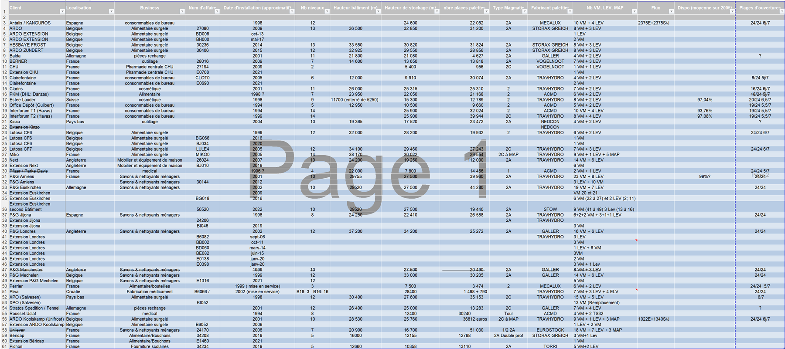
Le détail « Pallets in a bay » du plan d'implantation donne la géométrie d'une alvéole : Confirmé
| Grandeur | Valeur |
|---|---|
| Palettes par alvéole | 2 |
| Largeur de palette (face) | 1 200 mm |
| Hauteur de charge | 1 500 mm |
| Lisse + jeu au-dessus de la charge | 350 mm |
| Pas d'étage | 1 850 mm (1 500 + 350) |
| Jeu entre palettes | 60 mm |
| Jeu palette / montant | 100 mm |
| Largeur d'alvéole | 2 660 mm |
La coupe « Y Way View » donne les cotes transversales : charges de 1 400 mm sur palettes de 1 000 mm, passage central de 1 500 mm, entraxes 2 550 et 1 956 mm. Le modèle CAO du site NEXT s'appelle « Palette pleine NEXT 1400x1200x1500 ». Confirmé
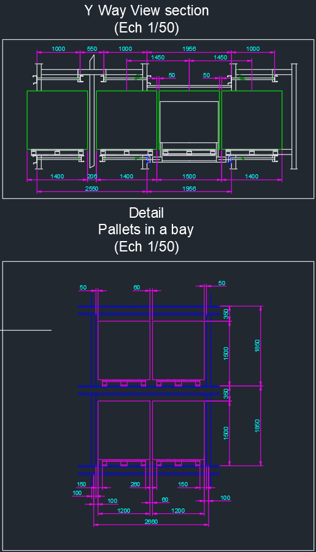
| Donnée | Valeur (cage NEXT) | Niveau |
|---|---|---|
| Poids maxi d'une palette | 1 000 kg | Confirmé |
| Poids d'un VM | 1 550 kg | Confirmé |
| Poids du Levmatic (nacelle) | 1 960 kg dans « CP et organigramme » ; 1 500 kg dans « Données Palettier » | À valider |
Toute cage commence par l'onglet de données du classeur de lancement. Les cases vertes sont les variables à saisir, les bleues des données fixes, les jaunes des calculs. Confirmé
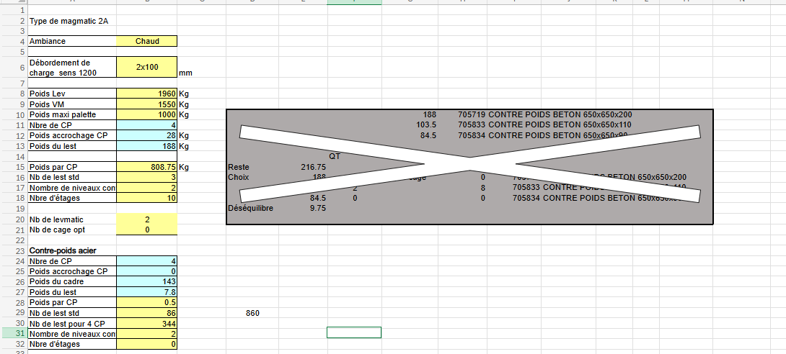
| Donnée | NEXT |
|---|---|
| Type de Magmatic | 2A |
| Ambiance | Chaud |
| Débordement de charge, sens 1200 | 2 × 100 mm |
| Nombre d'étages | 10 |
| Niveaux de convoyeurs | 2 |
| Nombre de Levmatic | 2 |
| Cages optionnelles | 0 |
Ces valeurs sont celles de l'affaire EHP01718 (Levmatic 6 et 8 du site NEXT, code FLEVE). Une autre cage aura d'autres valeurs. La table du classeur associe « chaud » à 2×25 et « froid » à 2×50. Confirmé
| Donnée | Valeur (NEXT) | Niveau |
|---|---|---|
| Contrepoids béton | 4 CP ; poids par CP 808,75 kg ; accrochage 28 kg ; 3 lests standard de 188 kg | Confirmé |
| Références de lest béton | 705719 (650×650×200, 188 kg) ; 705833 (650×650×110, 103,5 kg) ; 705834 (84,5 kg) | Confirmé |
| Choix des lests | 3 × 705719 + 1 × 705834 par contrepoids | Confirmé |
| Déséquilibre après choix | 9,75 kg (reste à équilibrer avant choix : 216,75 kg) | Confirmé |
| Contrepoids acier | 4 CP ; cadre 143 kg ; lest 7,8 kg ; 86 lests standard par CP (344 pour 4 CP) | Confirmé |
Un fichier d'implantation contient une vue en plan par niveau de bâtiment (Ground, First, Second, Third floor), trois coupes et des détails. Confirmé
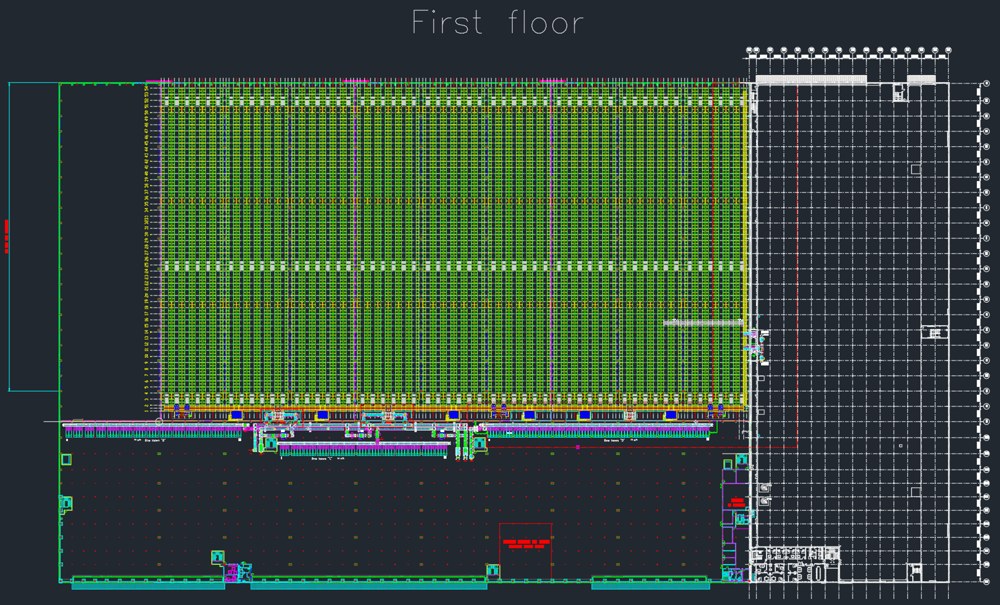
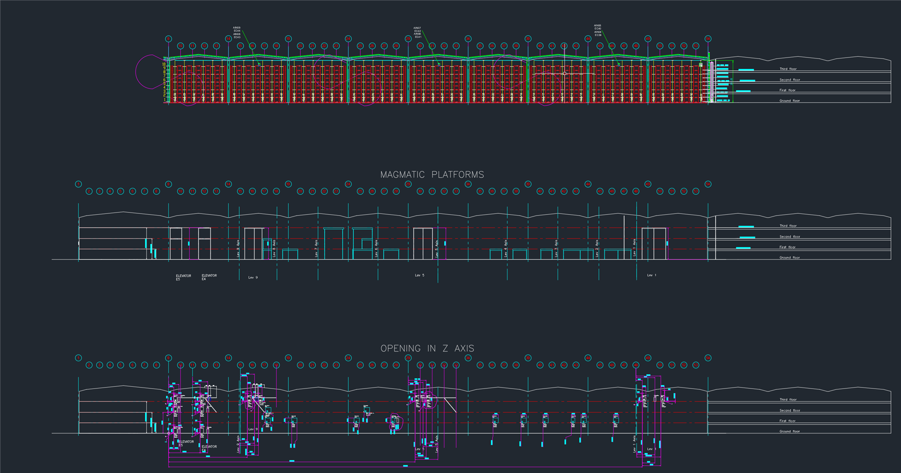
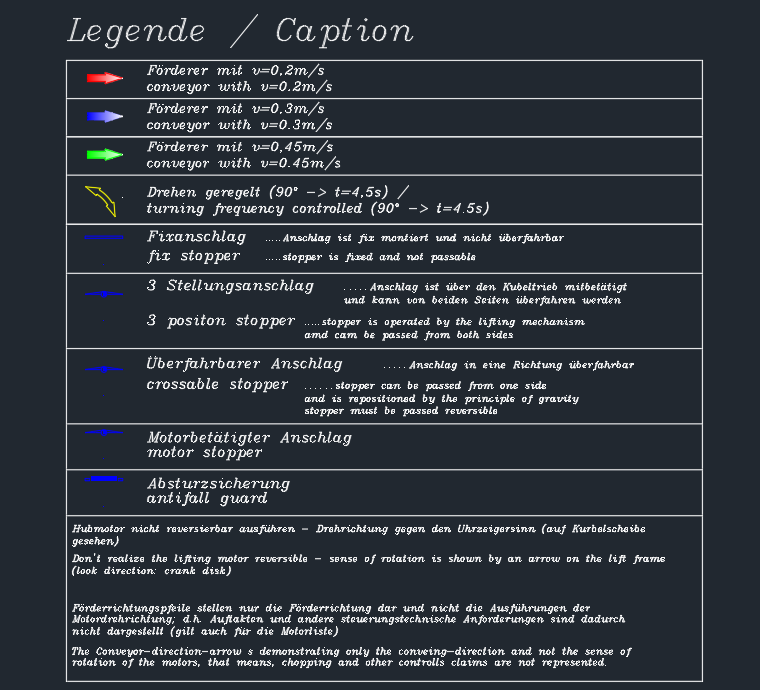
| Symbole | Signification |
|---|---|
| Flèche rouge | Convoyeur à 0,2 m/s |
| Flèche bleue | Convoyeur à 0,3 m/s |
| Flèche verte | Convoyeur à 0,45 m/s |
| Flèche jaune courbe | Table tournante régulée (90° en 4,5 s) |
| Trait bleu | Butée fixe, non franchissable |
| Butée 3 positions | Actionnée par le levage, franchissable des deux côtés |
| Butée franchissable | Passage dans un seul sens, rappel par gravité |
| Butée motorisée | Commandée par moteur |
| Trait bleu épais | Antichute |
Les flèches donnent le sens de convoyage, pas le sens de rotation des moteurs. Le moteur de levage ne doit pas être réversible. Confirmé
| Emplacement | Contenu |
|---|---|
| N:\BEMI\Espacebm\Affaires | Un dossier par client ou extension |
| …\Code composant\081000 | Cages Levmatic : un dossier par site ou par Levmatic |
| …\Codification | Classeurs d'attribution des codes articles |
| …\STD_BE | Standards BE : LEV, MAT, VM, SW |
| COFFRE PDM\6-LAYOUTS | Plans d'implantation SolidWorks, par client et n° d'affaire |
Les fichiers d'une cage se nomment code composant - n° d'affaire - désignation, par exemple « 081000-EHP01718 LEVMATIC NEXT 6 ET 8 ». Confirmé
Sur le Bilan P&G, 105 affaires sur 120 n'ont pas de plan d'ensemble renseigné. Le fichier « Historique des affaires Magmatic » sert de point d'entrée : n° d'origine, n° BEEM, emplacement des plans. Confirmé
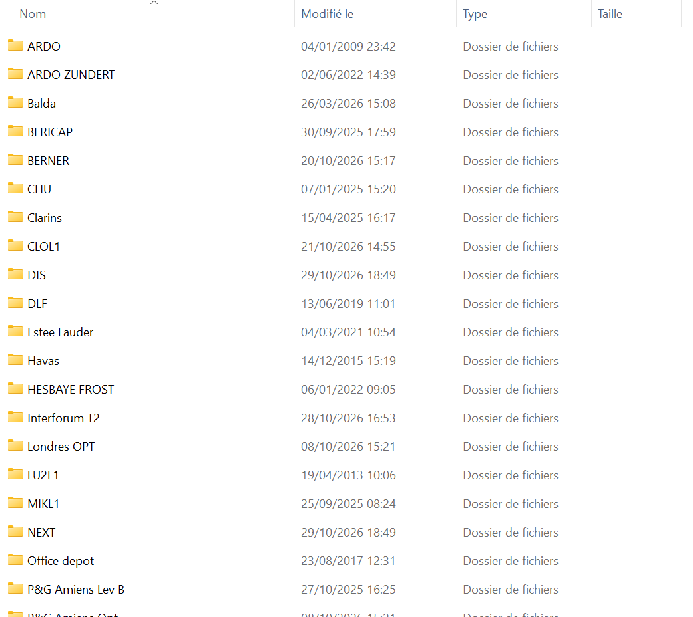
Le dossier « Codification » contient un classeur par plage de codes à 6 chiffres. Confirmé
| Plage | Nature | Exemples du guide |
|---|---|---|
| 000000 | Sous-ensembles (S/Ens) | 002531, 001089, 002886 |
| 010000, 080000 | Ensembles et composants | 010270 charpente, 080143 Levmatic |
| 600000 | Entretoises, poulies, roues ; 609600 : pièces sur plan rack | 609509 cadre réa |
| 700000 | Pièces sur plan | 705719 lest béton, 710241 crémaillère |
| 800000 | Outillage sur plan | |
| A00000 | Plans de principe | A00622 cage Levmatic NEXL1 |
La nature des plages 010000 et 080000 est déduite des références du classeur de lancement. Déduit
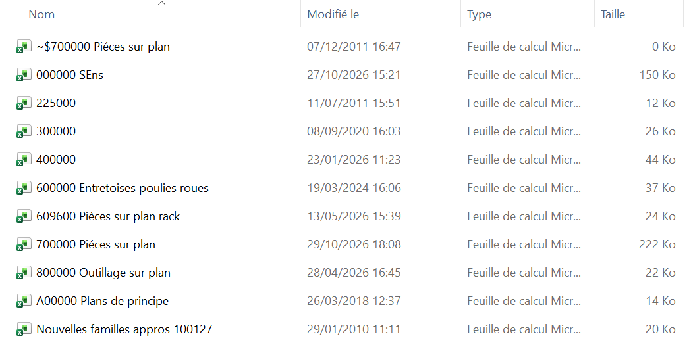
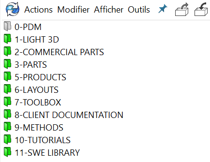
Le coffre PDM (C:\VueLocalePDM\COFFRE PDM) contient les produits Intelis en « Light 3D », avec une carte de données par fichier : code PDM, code article, désignations FR et EN, état. Confirmé
Les Levmatic et les VM sont encore sur le serveur N:. Leur intégration au PDM est prévue en phase 4 du plan d'action : fonds de plan, cohérence matière / traitement / code article, lien avec la base IFS. Confirmé
Le dossier « Smarteam » du serveur date de 2000-2001 : ancien outil de gestion, plus utilisé. Déduit
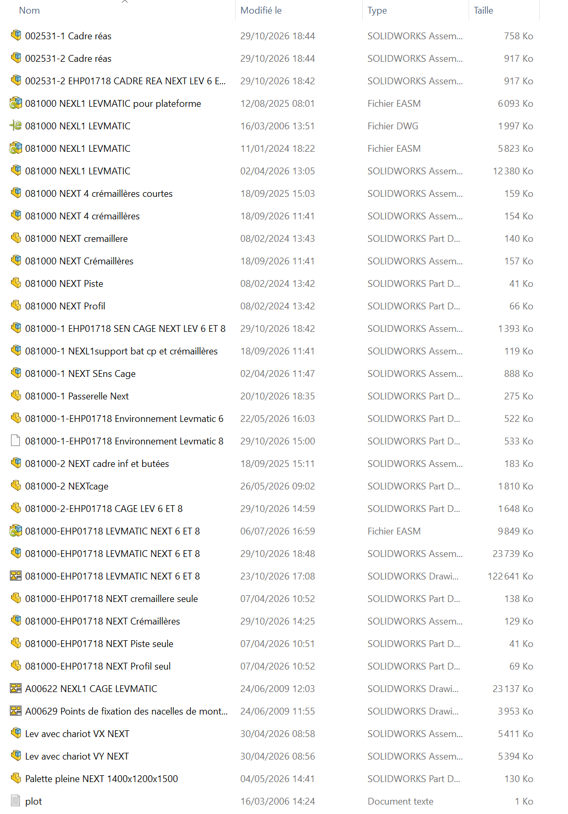
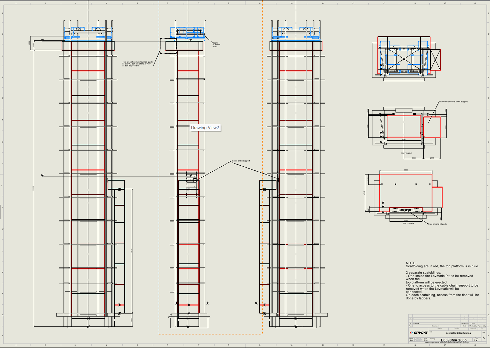
Ce plan montre une cage complète et son environnement de montage. À retenir pour la conception : Confirmé
Le classeur calcule la quantité de chaque ensemble à partir des données d'entrée. Chaque bloc surmonté d'une étiquette jaune « LANCEMENT » est lancé séparément. Confirmé
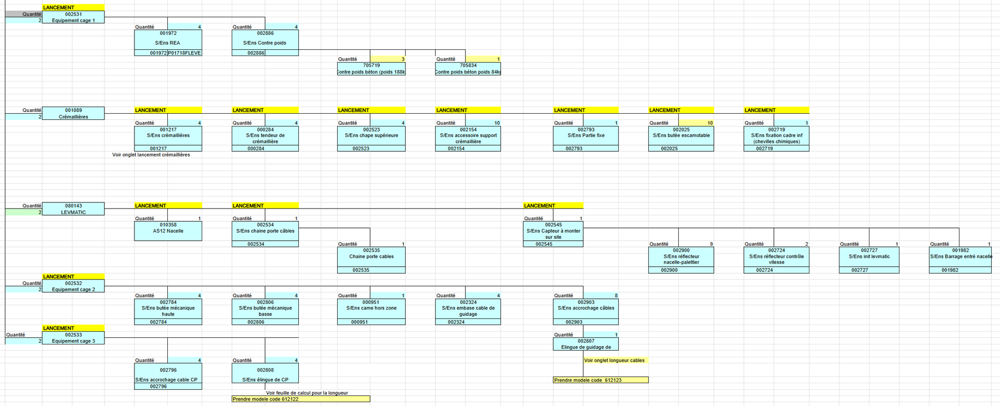
Quantités pour 2 Levmatic, 10 étages, 2 niveaux de convoyeurs (cage NEXT) :
Les quantités liées à la hauteur (U supports, butées escamotables, accessoires supports, réflecteurs nacelle-palettier) changent avec le nombre d'étages. Les élingues sont créées à partir des modèles 612122 et 612123, avec la longueur calculée au § 5.3. Déduit
Le classeur enchaîne cinq onglets de calcul à partir des données d'entrée. Valeurs de l'exemple NEXT (chaud, 10 étages, charge de 1 500 mm). Confirmé
| Grandeur | Règle (classeur) | NEXT |
|---|---|---|
| Fond de fosse → dessous toit | dernier niveau de pose + 1993 + 1100 + profondeur de fosse | 21 743 mm |
| Fond de fosse → dessous cadre réa | profondeur de fosse + dernier niveau de pose + 1993 | 20 643 mm |
| Surcourse haute + basse du Levmatic | 600 + 600 | 1 200 mm |
| Hauteur sous cadre pour VM (batterie en haut) | VM chaud 1920 / froid 1750 + jeu 50 + surcourse / 2 − 165 | 2 470 mm |
| Câble | Règle | NEXT |
|---|---|---|
| Câble de levage | (H axe réa − H plan de roulement − H1 attache − surcourse haute) + π·D/2 + (25 + traverse 300 + jeu cadre / CP) + course (nominale + 2 surcourses) + 900 (boîte à coin), arrondi à la centaine supérieure | 21 900 mm (21 872 avant arrondi) |
| Câble de guidage | H cadre réa − 35 − 440 + 400 (boîte à coin), arrondi à la centaine supérieure | 20 600 mm (20 568 avant arrondi) |
Diamètre primitif de la poulie : 582 mm. Confirmé
Longueur théorique = course verticale / 2 + π·R + rehausse (200) + longueur supplémentaire (300). Nombre de maillons = longueur théorique / pas (91 mm), arrondi au supérieur. NEXT : course 18 150 mm → 10 800 mm théoriques → 119 maillons, 10 829 mm. Le classeur vérifie aussi l'interférence de la plaque avec la traverse. Confirmé
| Étape | Règle | NEXT |
|---|---|---|
| Longueur pratique | hauteur de cage − 79,5 − 72,5 − 50 | 20 441 mm |
| Crémaillères de 3000 (710241) | partie entière de (longueur pratique / 3000), plus un morceau pour le reste | 6 + morceau de 2 020 mm |
| Pistes | 1 piste de 2250 (710238, −60 mm en bas) + pistes de 3000 + morceau | 1 × 2250 + 5 × 3000 + 2 770 |
| Profils de 6000 (440109) | longueur du profil = longueur de crémaillère | 3 profils + morceau de 2 020 mm |
| Visserie | plaques de jonction et goupilles : nombre de crémaillères ; vis CHC M12×35 : 9 par crémaillère | 6 plaques, 63 vis, 57 rondelles épaisses |
| Conditionnement | tronçons de 12 m ; caissons d'extrémité 703450 et central 703449 ; pointes 375000 | 2 + 3 caissons, 24 pointes |
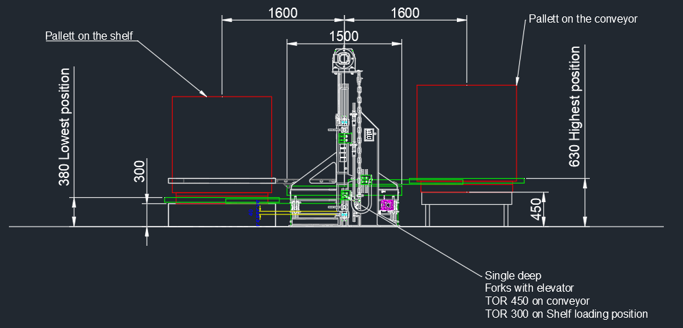
| Grandeur | Valeur | Niveau |
|---|---|---|
| Niveau d'appui de la palette sur convoyeur | TOR 450 mm | Confirmé |
| Niveau d'appui en position de chargement du rayonnage | TOR 300 mm | Confirmé |
| Course des fourches | 380 mm en position basse, 630 mm en position haute | Confirmé |
| Entraxe nacelle / palette, de chaque côté | 1 600 mm | Confirmé |
| Largeur de la nacelle entre charges | 1 500 mm | Confirmé |
| Repère | Valeur (NEXT) |
|---|---|
| Pas d'étage | 1 850 mm |
| Premier niveau palettier | 1 050 mm |
| Niveaux batterie | premier à 1 194,5 mm, puis tous les 2 000 mm |
| Niveau convoyeur 1 | 1 090 mm |
Le Bilan P&G recense les fournisseurs des convoyeurs de Levmatic par affaire. Certains n'ont laissé aucune donnée, ce qui complique les remplacements. Confirmé
| Site | Affaire | Levmatic | Fournisseur | Données disponibles |
|---|---|---|---|---|
| Londres | PGLO0 | 1, 2, 4, 5, 7, 8 | Schulz | Aucune |
| Londres | B6082 | 11, 12, 14 | Matrex | Aucune |
| Mechelen | 10451 | 1 à 6 | Schulz | Aucune |
| Amiens | 30144 | A, E, K | Matrex | Motoréducteur à frein SEW R37 DT80 |
| Jijona | 24206 | 6 | Citex | Aucune |
| Euskirchen | EHP0000488 | 5 | Matrex | SEW R37DRN80MK4BE1HR, 74 tr/min ; plan Matrex |
Des fissures ont été constatées sur les voies de roulement. Elles sont remplacées par des voies qui ne créent pas de sur-contraintes. Les pièces d'origine sont remplacées par des sous-ensembles : Confirmé
| Pièces d'origine | Nouveau sous-ensemble | Sites concernés |
|---|---|---|
| 711108 – 711110 | 005561 (711462 et 711463) | Londres (Lev 3 et 6) |
| 710892 – 710893 | 005563 (711466 et 711467) | Londres, Mechelen, Amiens, Euskirchen (aucun à Jijona) |
| 711591 – 711594 | 005560 (711438 et 711439) | Euskirchen (Lev 13, 14 et 16) |
Sur chaque site P&G, la sécurité des Levmatic a été reprise après coup par des affaires qui se répètent : Confirmé
| Sujet | Affaires relevées |
|---|---|
| Portes coulissantes de voie X | Londres BE050 ; Mechelen BE022 (proto, Lev 1) puis BE048 (Lev 2 à 6) ; Amiens BE044 (11 Lev) ; Jijona BE046 (Lev 1 à 4) ; Euskirchen BE042 (7 Lev) |
| Sécurité phase 1 : équipement de palette cage | Londres BC070, Mechelen BC084, Amiens BC072, Jijona BC082, Euskirchen BC068 |
| Sécurité phase 2 (« Bucket 2 ») : détection de déformation de rail | BE012, BE010, BE016, BE014, BE008 |
| Obsolescences (« Bucket 3 ») | BH006, BH002, BH004, BH010, BH008 |
| Sécurisation de la butée d'entrée de palettes (capteur) | EHP0000691, EHP0000871, EHP0000987 |
La présentation « Uniformisation des plans implantation BEMI » fixe les règles pour les plans SolidWorks gérés dans le PDM. Elle a été écrite pour les convoyeurs ; son application aux plans Magmatic est à confirmer. Confirmé
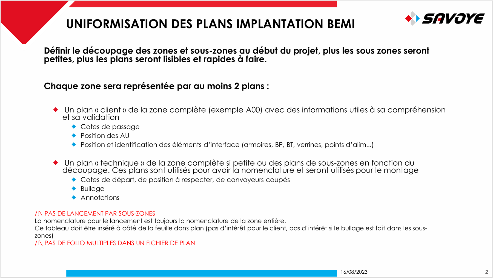
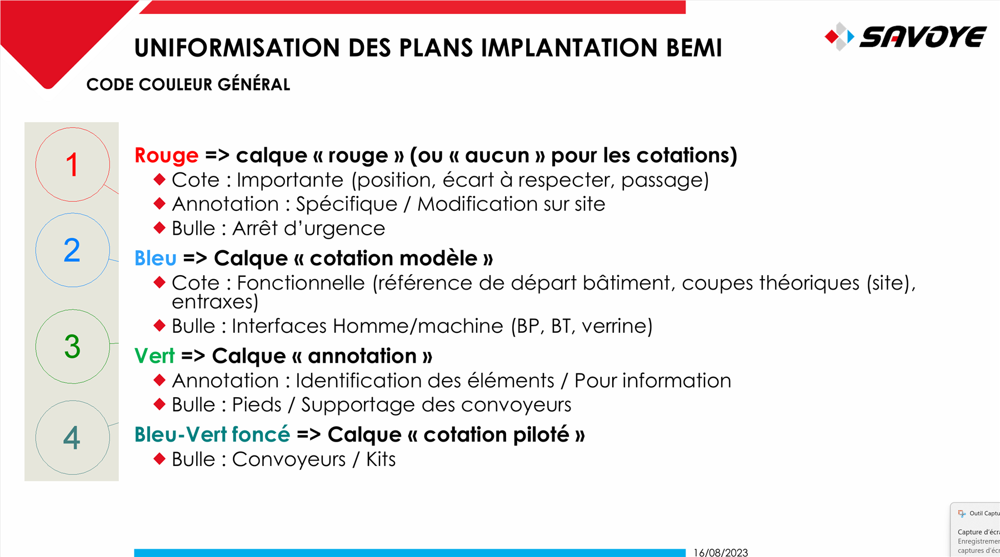
| Thème | Règle |
|---|---|
| Découpage | Définir zones et sous-zones au début du projet. Chaque zone a au moins 2 plans : « client » (cotes de passage, arrêts d'urgence, éléments d'interface) et « technique » (cotes de départ, bullage, annotations). |
| Lancement | Pas de lancement par sous-zone. La nomenclature de lancement est celle de la zone entière. Pas de folios multiples dans un fichier de plan. |
| Vues | Échelle 1:50 mini. Au moins 3 vues : dessus, côté (élévation), isométrique. Sol en bas sur les vues de côté ; pas de vue de dessous ; vues de dessus toutes dans le même sens. Vue globale de l'installation dans un coin, zone mise en valeur. |
| Rouge | Cote importante (position, écart à respecter, passage), spécificité ou modification sur site, bulle d'arrêt d'urgence. |
| Bleu | Cote fonctionnelle (référence bâtiment, entraxes, coupes théoriques), bulle IHM (boutons, verrines). |
| Vert | Identification d'éléments, information, bulle de pieds et supportage. |
| Bullage | Sur la vue de dessus, lignes de rappel sans croisement, nomenclature triée par n° de plan, sur les plans « technique » uniquement. |
| Liens PDM | Ne jamais appeler une pièce d'une autre affaire dans un plan d'ensemble : cela crée des liens entre affaires dans le PDM. |
| Enregistrement | Avant archivage : vue de dessus, zoom tout, régénérer, sauver. |
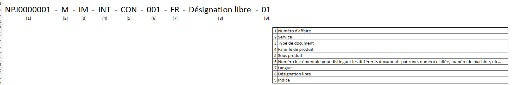
| N° | Champ | Valeurs utiles pour Magmatic |
|---|---|---|
| 1 | N° d'affaire | 3 lettres + 7 chiffres (ex. EHP0000488) |
| 2 | Service | A BEA ; B BEEM ; E BEE ; H HSE ; I INS ; M BMI ; W BEI |
| 3 | Type de document | IG plan d'implantation général ; IM plan d'implantation ; EN implantation point énergie ; EP épure ; PS plans spécifiques ; NO nomenclature ; NC note de calcul ; CG bilan des charges ; MM méthode de montage ; ZO zonage ; RP repères automate ; AB tel que construit |
| 4 | Famille de produit | MAG Magmatic (autres : INT Intelis, PTS X-PTS, MAN Manut 2000, SEC sécurité, NRJ énergie) |
| 5 | Produit | ALV armoire élévateur Levmatic ; VMA véhicule Magmatic ; BAT batterie VM ; HAC chargeur ; ACH armoire chargeur ; AMA armoire mât à palette ; PCA palette cage ; RAC rack ; STR structure ; CON convoyeurs ; PCF porte coupe-feu ; PGR protection grillagée ; SEC sécurité |
| 6 | Incrément | Distingue les documents par zone, n° d'allée, n° de machine |
| 7 | Langue | FR, EN, DE, ES, FA (français / anglais)… |
| 8 | Désignation libre | |
| 9 | Indice | 01, 02… |
Source : classeur « BEEM - Nommage des documents ». Confirmé
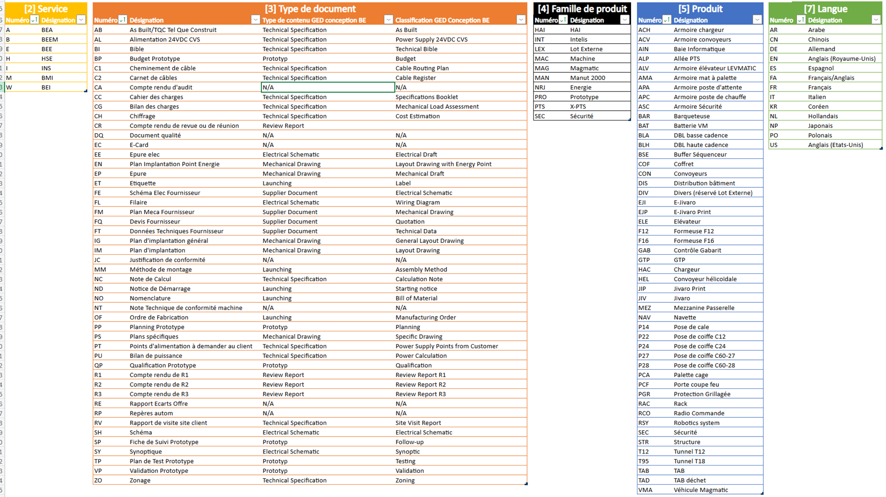
Sur les 120 affaires du Bilan P&G, 25 seulement sont au format BEEM. Les autres suivent des formats plus anciens (B5068, BE012, 30144…). Confirmé
Les sites P&G montrent les mêmes opérations d'adaptation sur du matériel de générations différentes. Confirmé
| Opération | Contenu relevé | Exemples d'affaires |
|---|---|---|
| Rétrofit Levmatic | Moteurs et variateurs, configuration SEW, armoire, partie fixe, capteurs, nacelle, convoyeurs | E3750, E3754, E3748 ; EHP0000488, EHP0000499, EHP0000527 |
| Rétrofit VM | Changement de moteur et de platine ; remplacement par des VM neufs | E3756, E3758, E3760 ; EHP0000512, EHP0000528 |
| Remplacement des nacelles | Nacelles de plusieurs Levmatic par site | ASO0000080 (Lev 2, 5, 7), ASO0000078 (C, D, F), ASO0000079 (4, 6, 8, 9) |
| Relais de convoyeurs | Remplacement des relais par des variateurs, chaînes porte-câbles | ASO0000071 à ASO0000075 |
| Voies de roulement | Remplacement par sous-ensembles nouvelle génération (§ 5.6) | Calendrier 2026-2027 |
| Extension de site | Ajout de VM ou de Levmatic sur un site existant | Londres : B6082, BB002, BD060, BE082, E0138, E0398 ; Next : BJ010 |
Le dossier NEXT contient les deux générations : la cage d'origine « NEXL1 » (plan A00622, 2006-2009) et la cage de l'extension EHP01718 (Levmatic 6 et 8, fichiers de 2026). Les fichiers de l'extension reprennent le code composant 081000 et ajoutent le numéro d'affaire. Confirmé
| N° | Point à valider | Chapitre |
|---|---|---|
| 1 | Définition des types de Magmatic (1, 2, 2A, 2C) et sens de « chaud / froid » | 2, 3.4 |
| 2 | Débordement de charge (2 × 100 mm) et gabarit réel de la charge ; hauteurs 1500 / 1800 | 3.1 |
| 3 | Poids du Levmatic : 1 500 ou 1 960 kg | 3.2 |
| 4 | Calcul des contrepoids : formule, choix béton / acier, déséquilibre admissible, erreur #NAME? | 3.5 |
| 5 | Jeu cadre de réa / contrepoids négatif (−280 mm) sur NEXT | 5.3 |
| 6 | Quantités de lancement fixes ou liées au site ; sens du sigle TOR | 5.2, 5.4 |
| 7 | Implantation des Levmatic, pas des allées, tolérances d'interface | 5.1, 5.4 |
| 8 | Cause de la fissuration des voies de roulement et critère de choix | 5.6 |
| 9 | Sécurités à intégrer d'origine dans une nouvelle cage | 5.8 |
| 10 | Application des règles de mise en plan BEMI à Magmatic ; code service BEEM | 6.1, 6.2 |
| 11 | Lecture d'un plan : calques, cartouche, numérotation des allées | 4 |
Une fois ces points validés, chaque règle « déduite » passe à « confirmée » et les chapitres « à compléter » sont rédigés à partir des plans de sites réels (version V2 du plan d'action, phase 5).